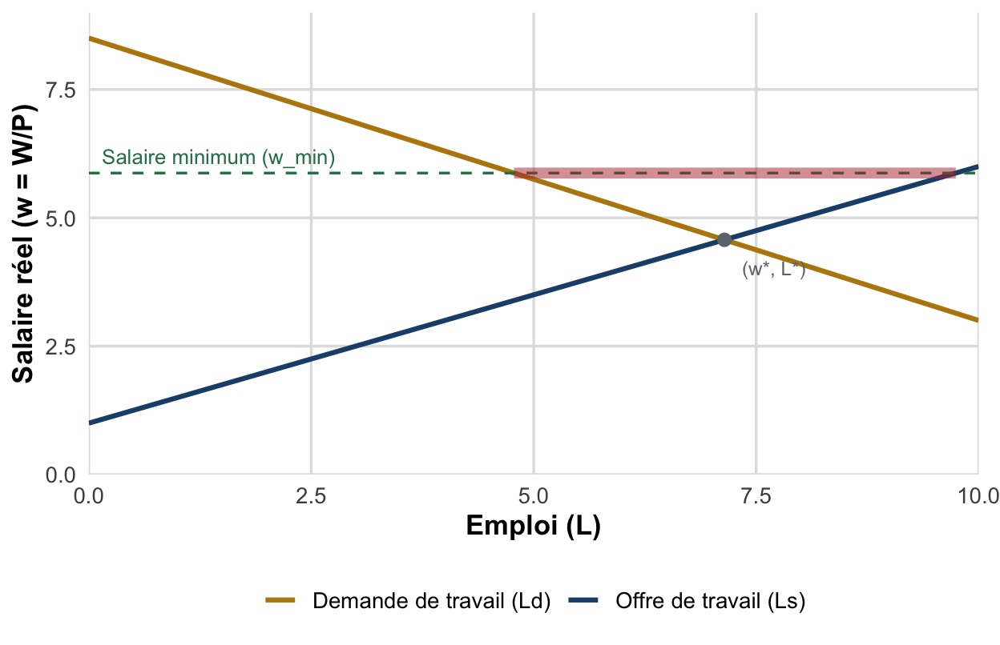
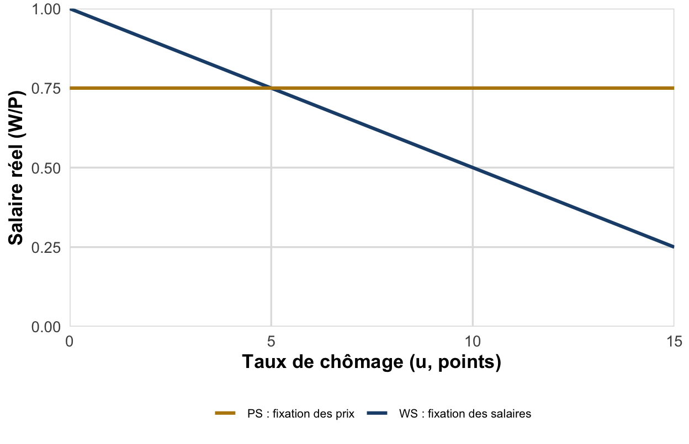

TD 5 : Analyses théoriques du marché du travail : néoclassique & WS-PS
Offre et demande de travail, chômage volontaire, coût du travail, et chômage d’équilibre dans le modèle WS-PS
Dossier de TD : QCM et définitions, lecture de graphique (salaire minimum et chômage classique), application chiffrée du modèle WS-PS, question de réflexion sur l’efficacité d’une baisse du coût du travail.
Objectifs de la séance
- Restituer les mécanismes de l’offre et de la demande de travail dans le modèle néoclassique (arbitrage travail/loisir, productivité marginale décroissante).
- Expliquer pourquoi, chez les néoclassiques, tout le chômage à l’équilibre est qualifié de volontaire.
- Lire un graphique offre-demande de travail et identifier le chômage classique provoqué par un salaire administré au-dessus de l’équilibre.
- Résoudre analytiquement le modèle WS-PS (calcul du taux de chômage d’équilibre \(u^*\) et du salaire réel d’équilibre) et représenter graphiquement le résultat.
- Discuter, de façon argumentée, l’efficacité d’une baisse du coût du travail selon le cadre théorique mobilisé.
Pré-requis. Ce TD s’appuie sur le CM 5 (analyse néoclassique) et le CM 8 (modèle WS-PS), ainsi que sur les notions vues en TD 3 (typologie des chômages : distinguer chômage volontaire, classique, structurel). Relisez avant la séance les définitions de salaire réel \(w = W/P\), salaire de réserve \(w_r\) et taux de marge \(m\).
NoteRappel express : deux modèles, deux logiques du chômage
- Néoclassique (§I) : marché en concurrence pure et parfaite, salaires flexibles \(\Rightarrow\) à l’équilibre, offre = demande, et tout chômage résiduel est volontaire (salaire de réserve supérieur au salaire de marché).
- WS-PS (§III) : marchés en concurrence imparfaite, salaires négociés au-dessus du salaire de réserve \(\Rightarrow\) le chômage d’équilibre \(u^*\) est involontaire mais structurel (pas de force de rappel automatique vers le plein emploi).
Exercice 1 : Définitions et QCM (offre/demande de travail, chômage volontaire)
a) Définitions. Donnez, en une phrase précise, la définition des notions suivantes :
- Salaire de réserve \(w_r\).
- Chômage volontaire (au sens néoclassique).
- Coin fiscal (tax wedge).
- Salaire d’efficience.
- Taux de marge \(m\) dans le modèle WS-PS.
b) QCM. Une seule réponse est correcte pour chaque question.
- Dans le modèle néoclassique, l’offre agrégée de travail est une fonction :
- décroissante du salaire réel
- croissante du salaire réel
- indépendante du salaire réel
- croissante puis décroissante du salaire réel
- La demande de travail à court terme est déterminée par l’égalisation entre le salaire réel et :
- le salaire de réserve
- la productivité marginale du travail
- le taux de marge des entreprises
- le taux de chômage
- Selon l’analyse néoclassique, un individu au chômage dont le salaire de réserve est supérieur au salaire de marché est en situation de :
- chômage conjoncturel
- chômage involontaire
- chômage volontaire
- chômage frictionnel uniquement
- Un salaire minimum fixé au-dessus du salaire d’équilibre provoque, dans le cadre néoclassique :
- une pénurie de travailleurs
- un chômage classique (excédent d’offre de travail)
- une baisse de la demande de travail à salaire inchangé
- aucun effet, le marché s’ajuste par les quantités
- Dans le modèle WS-PS, la courbe PS (price setting) est :
- croissante avec le taux de chômage
- décroissante avec le taux de chômage
- horizontale, indépendante du taux de chômage
- verticale au niveau du chômage naturel
- Une hausse du taux de marge \(m\) des entreprises (baisse de la concurrence) déplace la courbe PS :
- vers le haut, ce qui réduit \(u^*\)
- vers le bas, ce qui augmente \(u^*\)
- vers la droite, sans effet sur le salaire réel
- elle ne déplace pas la courbe PS, seulement la courbe WS
Exercice 2 : Lecture de graphique : salaire minimum et chômage classique
Le graphique ci-dessous représente l’offre et la demande agrégées de travail dans une économie fictive, en concurrence pure et parfaite. Un salaire minimum légal \(w_{min}\) est imposé au-dessus du salaire d’équilibre concurrentiel \(w^*\).
Répondez aux questions suivantes en vous appuyant sur le graphique :
- Repérez sur le graphique le salaire d’équilibre concurrentiel \(w^*\) et l’emploi d’équilibre \(L^*\). À quoi correspond, graphiquement, l’intersection des deux courbes ?
- Au niveau du salaire minimum \(w_{min}\), lisez la quantité de travail offerte et la quantité de travail demandée. Comment se nomme l’écart entre les deux ?
- Ce chômage est-il volontaire ou involontaire au sens néoclassique ? Justifiez à partir de la définition du chômage volontaire.
- Deux mesures de politique économique sont envisagées pour réduire ce chômage sans toucher au salaire minimum légal : (i) une baisse des cotisations sociales employeur, (ii) une hausse de la productivité du travail. Pour chacune, indiquez la courbe affectée, le sens du déplacement, et l’effet attendu sur l’emploi. (Indice : représentez mentalement, ou sur brouillon, le déplacement de la courbe concernée.)
Exercice 3 : Exercice analytique : le chômage d’équilibre dans le modèle WS-PS
Dans une économie décrite par le modèle WS-PS, la courbe de fixation des salaires (WS) est donnée par : \[ \frac{W}{P} = 1 - 0{,}05\,u \] où \(u\) est le taux de chômage (en points) et \(W/P\) le salaire réel. La courbe de fixation des prix (PS) s’écrit : \[ \frac{W}{P} = \frac{1}{1+m} \] Le taux de marge des entreprises est initialement \(m_0 = 0{,}25\) (25 %).
a) Calculez le salaire réel compatible avec la courbe PS, \(\left(\dfrac{W}{P}\right)_0\).
b) En déduire, par résolution de \(1 - 0{,}05\,u^*_0 = \left(\dfrac{W}{P}\right)_0\), le taux de chômage d’équilibre \(u^*_0\).
c) Une vague de fusions-acquisitions réduit l’intensité concurrentielle sur les marchés de biens et services : le taux de marge passe à \(m_1 = 0{,}60\) (60 %). Calculez la nouvelle courbe PS, \(\left(\dfrac{W}{P}\right)_1\), puis le nouveau chômage d’équilibre \(u^*_1\) et le nouveau salaire réel d’équilibre.
d) Représentez graphiquement, sur un même repère (chômage \(u\) en abscisse, salaire réel \(W/P\) en ordonnée), la courbe WS, la courbe PS initiale et la courbe PS après la fusion. Situez les deux équilibres.

e) Qualitativement, expliquez en deux ou trois phrases pourquoi une baisse de la concurrence sur les marchés de biens se traduit, dans ce modèle, par une hausse durable du chômage, alors qu’aucun salaire minimum légal n’intervient dans ce raisonnement.
Exercice 4 : Question de réflexion (dissertation courte, 300-400 mots)
ImportantSujet
« Une baisse du coût du travail permet-elle toujours de réduire le chômage ? »
Vous répondrez à cette question sous forme de mini-dissertation structurée (introduction avec définitions et annonce de plan, deux parties courtes, conclusion). Vous devrez notamment :
- rappeler pourquoi, dans le modèle néoclassique, une baisse du coût du travail réduit le chômage classique ;
- discuter si ce résultat se transpose telle quelle dans le modèle WS-PS, en particulier, quels leviers de baisse du coût du travail agissent sur quelle courbe (WS ou PS) ;
- mobiliser la distinction entre chômage volontaire, classique et d’équilibre (structurel) vue en TD 3 ;
- conclure sur les limites communes aux deux approches (rigidités institutionnelles, hétérogénéité du travail).
Pour aller plus loin
AstuceRessources complémentaires
- Vidéo : la théorie du salaire d’efficience : approfondit les fondements microéconomiques de la rigidité salariale à la baisse (asymétries d’information, aléa moral).
- Vidéo : la théorie insiders-outsiders de Lindbeck & Snower (1986) : pourquoi les salariés en poste conservent un pouvoir de négociation même en présence d’un chômage élevé.
- Vidéo : la théorie des contrats implicites d’Azariadis (1975) : un autre fondement microéconomique de la rigidité des salaires nominaux.
- Layard et al. (1991), Unemployment: Macroeconomic Performance and the Labour Market : la référence fondatrice du modèle WS-PS.
- Shapiro et Stiglitz (1984) sur le salaire d’efficience comme mécanisme disciplinaire (modèle shirking).
- Cahuc et Zylberberg (2004), Le marché du travail : synthèse française des modèles présentés dans ce TD.
Les références
Cahuc, Pierre, et André Zylberberg. 2004. Le marché du travail. De Boeck.
Layard, Richard, Stephen Nickell, et Richard Jackman. 1991. Unemployment: Macroeconomic Performance and the Labour Market. Oxford University Press.
Shapiro, Carl, et Joseph E. Stiglitz. 1984. « Equilibrium Unemployment as a Worker Discipline Device ». American Economic Review 74 (3): 433‑44.